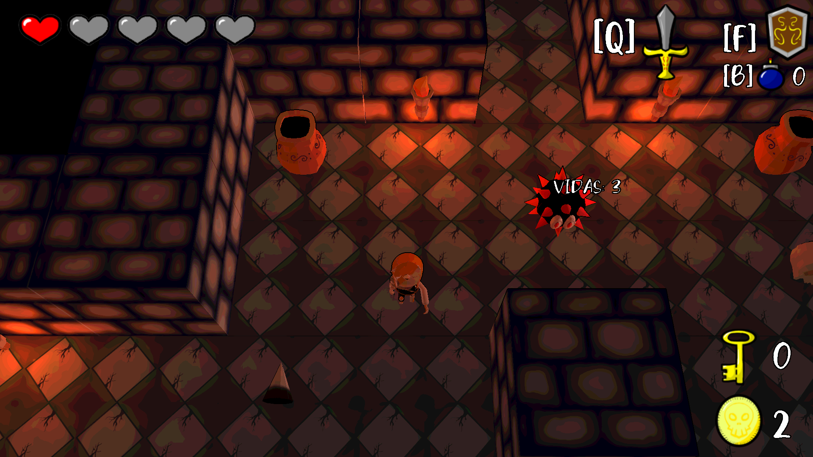

Relic Raider
Project Type: University Group Project
Role: Engine Programmer, Gameplay Programmer
Relic Raider was a challenging and rewarding university group project focused on the creation of a custom 3D game engine built from scratch using C++. This engine was then used to develop a fully playable video game with mechanics inspired by Zelda: Link's Awakening. The project involved a deep understanding of low-level programming concepts, game engine architecture, and collaborative teamwork to bring a complex vision to life.
Our custom engine handled core functionalities such as rendering, input management, collision detection, and basic game object management. Developing the game on top of this engine provided invaluable experience in understanding the inner workings of game development and the crucial interplay between engine and game code.
Core Development Work
Custom Game Engine Development
As part of the team, my contributions to the custom game engine included:
- Input Management: Developing the input system to capture keyboard and potentially gamepad inputs, and providing an interface for the game logic to access these inputs.
- Collision Detection: Implementing a fundamental collision detection system to handle interactions between game objects. This likely involved AABB (Axis-Aligned Bounding Box) collision detection.
- Game Object Management: Contributing to the architecture for managing game entities, their properties, and their lifecycle within the engine.
Gameplay Mechanics Implementation
My work also extended to developing specific gameplay mechanics for Relic Raider, drawing inspiration from Zelda: Link's Awakening:
- Character Control: Implementing the player character's movement, and basic actions using the engine's input system.
- World Interaction: Developing systems for interacting with the game world, such as object manipulation, item collection, and potentially basic puzzle elements.
- Combat System: Implementing a rudimentary combat system, allowing the player to interact with enemies.
- Level Integration: Working on integrating level designs and assets into the game using the custom engine.
This required translating the design concepts into functional C++ code that interacted with the underlying game engine.
